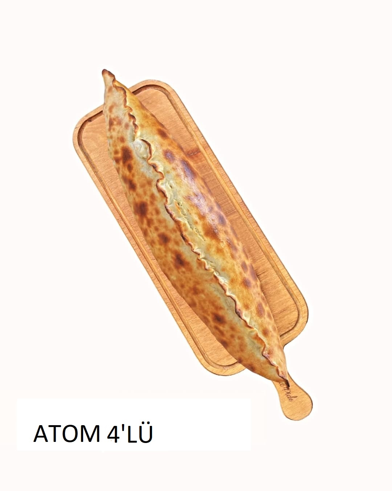

Şefin İmza Pideleri
En çok tercih edilen ve ustamızın özel tarifleriyle hazırlanan lezzet yıldızları
Çok Satan

Görele Kavurmalı
480 TLMeşhur Görele usulü kapalı hamur, özenle seçilmiş lokum gibi Karadeniz dana kavurması ve eriyen hakiki tereyağı ile muhteşem uyum.
Özel Tavsiye

Kuşbaşılı Pide
380 TLZırh bıçağı ile el emeğiyle doğranmış, özel marine edilmiş yumuşacık kuşbaşı etin ince hamur ile odun ateşindeki kusursuz dansı.

Atom 4'lü Pide
480 TLLezzet patlaması yaşamak isteyenlere: Kayseri pastırması, zırh kıyma, özel dana kavurma ve eriyen taze kaşar peyniri tek pidede buluştu.